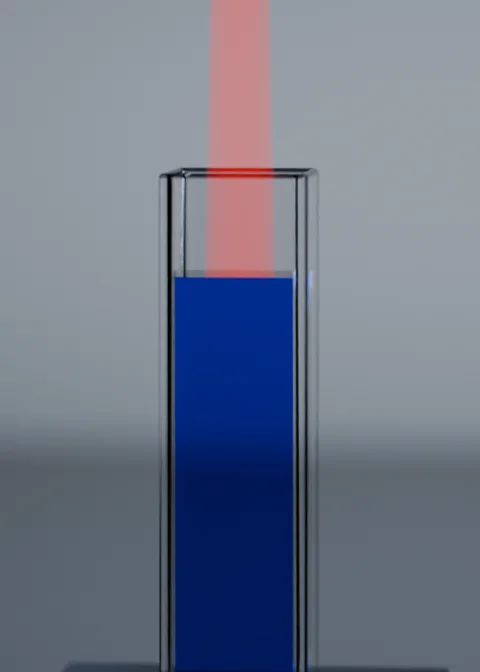
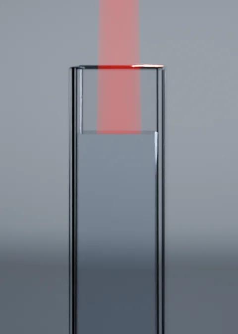

Schritt 1
Einfangen
Ein Farbstoff – der Photosensibilisator – schluckt ein Lichtteilchen und wird dadurch angeregt.
Pflanzen nutzen es seit Jahrmillionen. Wir Menschen lernen gerade erst, Licht chemisch einzufangen – und stoßen dabei auf ein unscheinbares Problem.
Video: NASA/SDO, Sonne im extremen UV (304 Å), 22.02.2024
Ein Tag Sonne
An einem einzigen Tag erreicht die Erde mehr Sonnenenergie, als die ganze Menschheit in über zwanzig Jahren verbraucht. [1]
Das Vorbild
Fotosynthese und Zellatmung bilden zusammen das „biochemische 1×1“ auf unserem Planeten, schreiben Bohrmann-Linde und Tausch [20]. Dabei binden Pflanzen nur einen winzigen Teil des Sonnenlichts.
1 EJ (Exajoule) = 10¹⁸ Joule. Grüner Balken: Spanne 568 bis 1.421 EJ. Von 2,84 · 10²⁴ J Sonnenenergie, die jährlich auf die Erdoberfläche treffen, sind das nur 0,02 bis 0,05 % [20].
Der Nachbau
Die künstliche Fotosynthese versucht nachzubauen, was Pflanzen können: Lichtenergie einfangen und chemisch speichern. Der erste Schritt ist fast immer derselbe – ein Farbstoff nimmt Licht auf.
Schritt 1
Ein Farbstoff – der Photosensibilisator – schluckt ein Lichtteilchen und wird dadurch angeregt.
Schritt 2
Im angeregten Zustand gibt er Energie oder ein Elektron weiter und setzt eine Reaktion in Gang, die ohne Licht nicht abliefe.
Schritt 3
Am Ende steht ein energiereicher Stoff – im Idealfall Wasserstoff, der sich lagern und später nutzen lässt.


3D-Darstellung aus unserem Intro-Film, keine Messung
Das Problem
Jedes Mal, wenn ein Photosensibilisator angeregt wird, kann er sich zersetzen, statt seine Aufgabe zu erfüllen. Er bleicht aus – und hört irgendwann auf zu arbeiten.
Unsere Forschungsfrage
Bisher
AI-Photoguard
Unser Modellstoff ist Methylenblau: gut erforscht, günstig, sicher zu handhaben – und es bleicht sichtbar aus. Was wir an ihm lernen, soll sich auf andere lichtaktive Farbstoffe übertragen lassen.